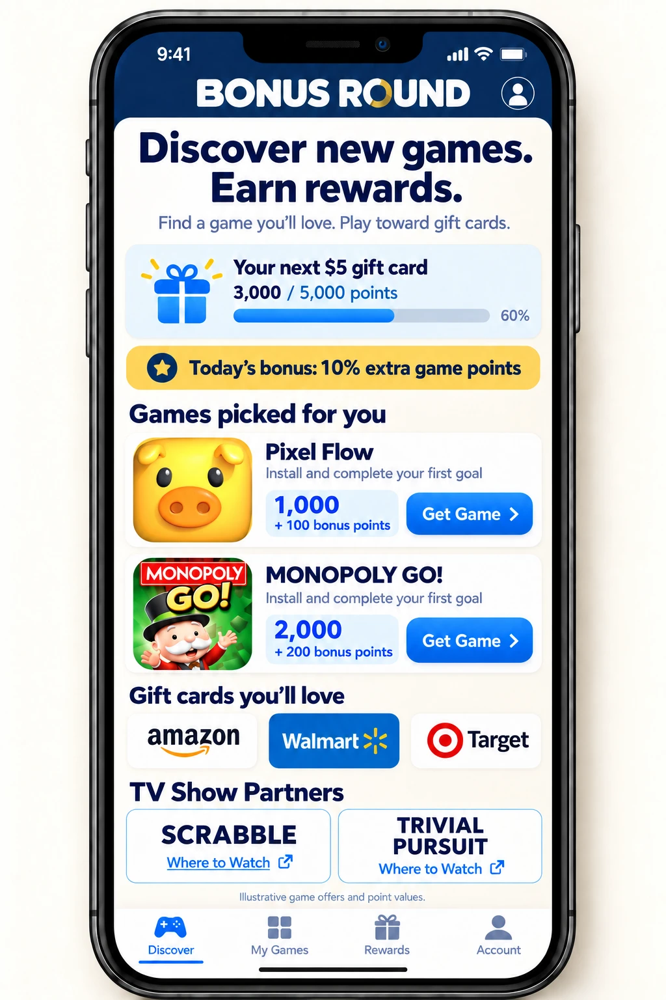
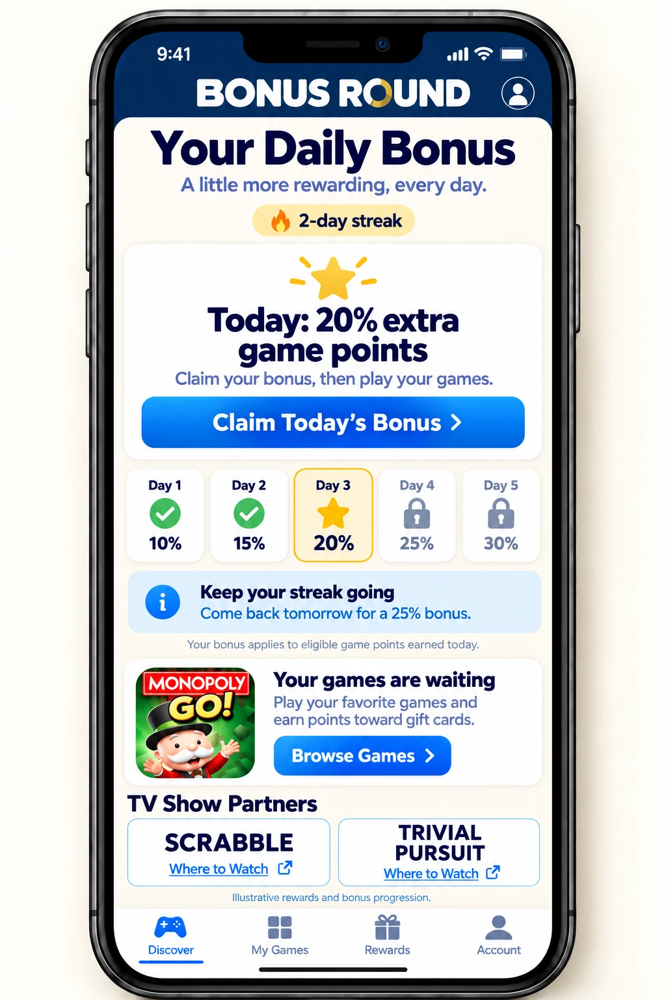
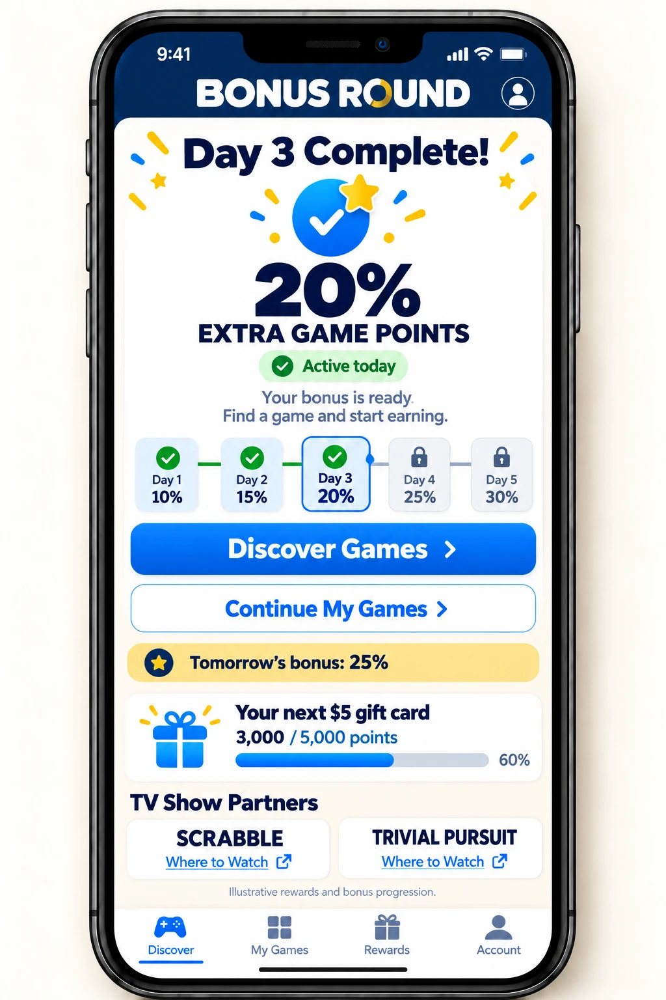
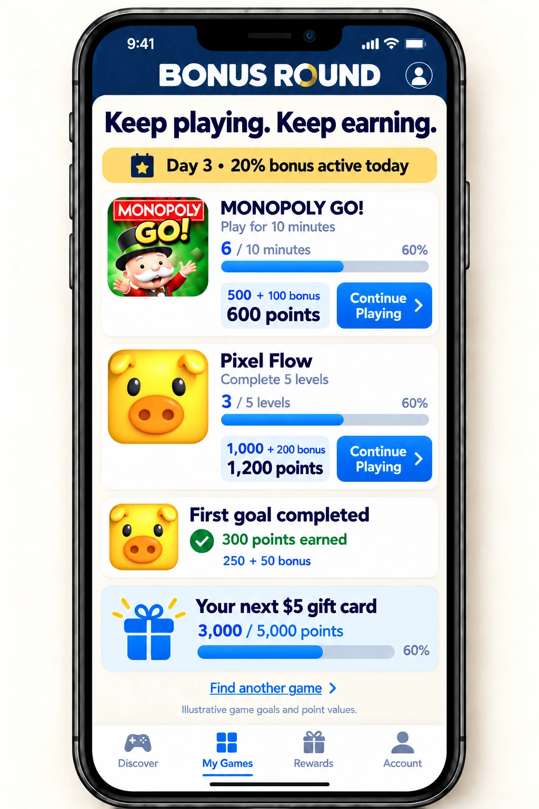
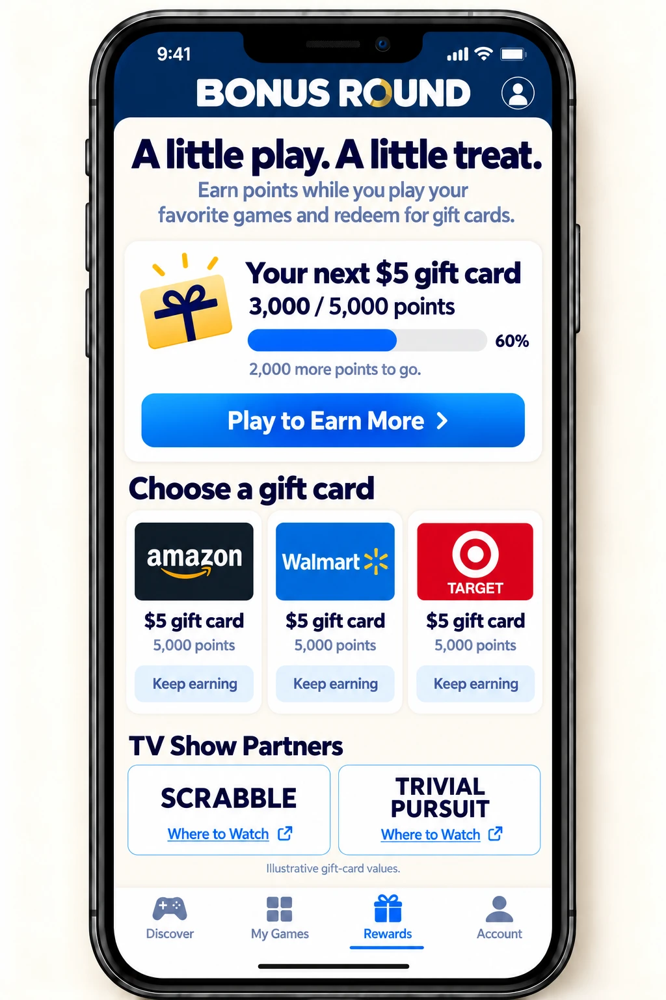

of boomer women play video games weekly.
A shared rewards app for game-show fans
Discover new games.Earn rewards.
Bonus Round gives Scrabble and Trivial Pursuit viewers a welcoming place to find mobile games, play toward gift cards and stay connected to the shows they love.

01 / Audience fit
A familiar pastime.
A rewarding daily routine.
Clear game offers, readable screens and visible reward progress make Bonus Round approachable for older viewers and casual players.
of boomer and Silent Generation players prefer puzzle games.
Source: ESA, 2025 Essential Facts. U.S. population findings, not research on either show’s viewers. The app offers individual games across multiple categories.
02 / The missed opportunity
Keep the connection going
after the show.
Fans already spend time playing mobile games elsewhere. Bonus Round connects that activity to the shows, creating more opportunities for daily engagement and brand loyalty.
A stronger fan relationship
A familiar show connection brings viewers in. Game progress, daily bonuses and rewards give them a reason to return.
Recurring partner value
Eligible gameplay earns points for fans and generates revenue that can be shared with the partnership.
03 / The player experience
Find a favorite.
Make progress.
Pick a reward.
Individual games lead the experience. A simple daily bonus supports repeat visits, while My Games and Rewards make the next step clear.
{kind=link}
{kind=link}

{kind=link}

{kind=link}

{kind=link}

Illustrative game offers, point values and bonus progression. Final eligibility and availability will be confirmed before launch.
04 / TV Show Partners
One app.
Distinct connections to each show.
Prominent partner placements connect fans to official show information, with room for additional game-show partners as the app grows.
SCRABBLE
50 episodes · 422K average viewers
Core audience: 50+
TRIVIAL PURSUIT
50 episodes · 505K average viewers
Core audience: 50+
Audience figures supplied by BGE. Proposed partner placements are subject to agreement and brand approval.
Extend the connection through The CW
7.8M combined social followers across Facebook, Instagram, TikTok, YouTube and X. Weekly CW promotion would bring fans into one shared rewards app.
Explore the TV + social opportunity →Shared network accounts, counted once across both shows. Follower totals include overlap; post reach and promotional scope are modeled separately.
05 / The platform
Your audiences.
Our rewards platform.
Influence Mobile provides the game marketplace, rewards fulfillment and measurement. Show partners bring their brands, audiences and promotional support.
Lifetime revenue
Rewards paid to players
Influence Mobile company figures.
Experience building branded rewards programs
Influence Mobile has partnered with Jeff Gordon, Jillian Michaels, Ashley Tisdale and Stan Lee on branded shopping-rewards programs.
06 / The financial opportunity
Daily activity.
Recurring partner revenue.
$4.8M–$5.4MIllustrative annual partner share
200,000 sustained monthly active players$2.00–$2.25 partner share per active player / month
A scale illustration, not an audience forecast. Assumes a constant audience for 12 months. Combined partner share is not allocated between shows or the agency. Any minimum guarantee and its treatment remain subject to agreement and are excluded from the model.
07 / Moving forward together
Bring Bonus Round
to game-show audiences.
Align the commercial agreement, promotional commitments and launch plan.
Commercial terms
Revenue share, any minimum guarantee and partner responsibilities.
Audience activation
Show-specific promotion, QR placements and digital support.
Launch readiness
Brand approvals, offer availability and reporting.